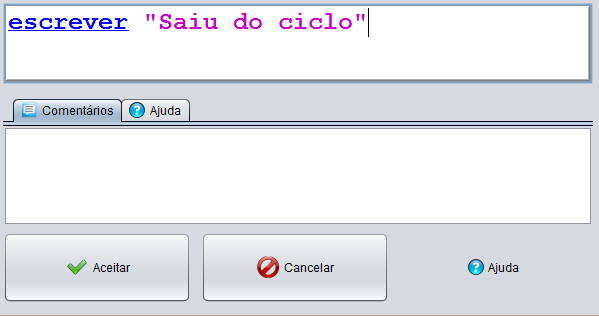

Esta instrução solicita ao utilizador a introdução de texto para posteriormente esse texto ser apresentado na consola
A introdução de texto pode ser do tipo:
Variável
"Texto"
[Expressão]
Exemplos:
Declaração da Instrução

Instrução declarada

Fluxograma com uma instrução write implementada

Como podemos ver na imagem a baixo, o resultado da instrução write vai diretamente para a consola.

Uma das mais valias do nosso programa é o facto de suportar expressões computacionais.
Se tivermos uma declaração do tipo: 2000 + 16 + "IPT"
O resultado obtido será 2016IPT


Por outro lado se tivermos uma declaração do tipo: "IPT" + 20 + 16
O resultado obtido será IPT2016